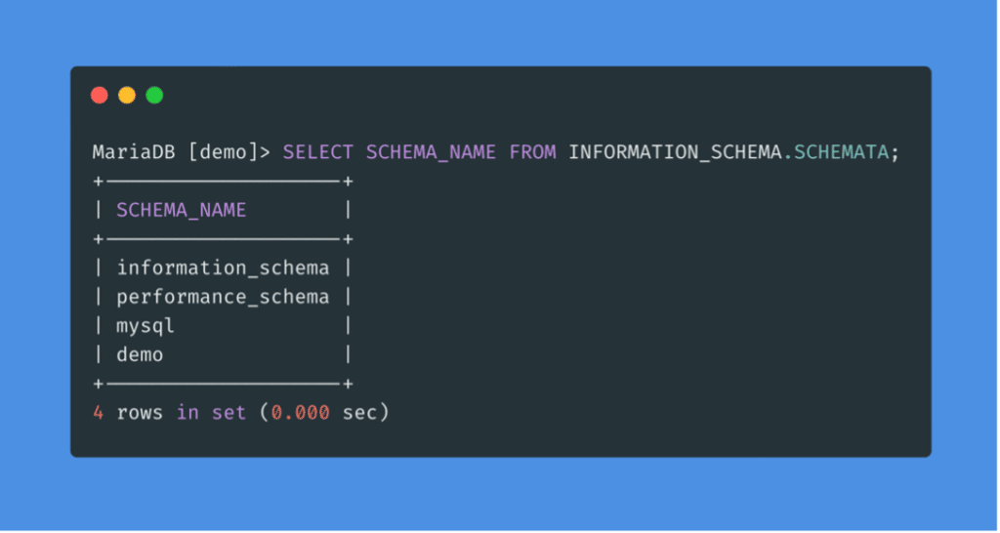

Projet SAÉ à la croisée du Développement et de la Cybersécurité : Conception d'une plateforme web applicative d'audit.
Intégration d'outils d'évaluation des vulnérabilités, gestion des politiques de sécurité et conteneurisation.
Projet en cours de réalisation. Les livrables et la démonstration finale seront présentés très prochainement.

SAÉ de 2ème année : Attaque d'un site web distant via l'exploitation et la mise en place de tunnels.
Mise en pratique d'approches de pentesting pour s'infiltrer et maintenir l'accès.
Compétences mobilisées :
Exploitation réussie documentée dans un rapport d'audit de sécurité complet.
Challenge d'entraînement sur la plateforme Hack The Box ciblant des environnements WordPress.
Application méthodique des phases d'audit et d'exploitation de vulnérabilités web.
Compétences mobilisées :
Résolution du challenge et rédaction d'un write-up détaillant la méthode utilisée.
TPs d'initiation au pentest (2ème année) : Sensibilisation aux vulnérabilités applicatives majeures.
Exploitation d'environnements vulnérables via des techniques d'injection de code et création de portes dérobées (backdoors).
Compétences mobilisées :
Assimilation pratique des vecteurs d'attaque courants et rédaction d'un rapport de validation.